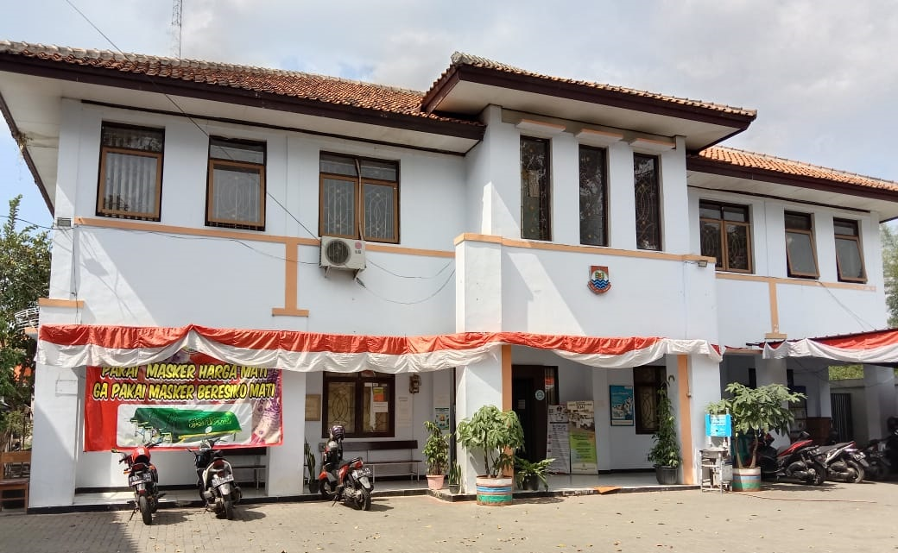
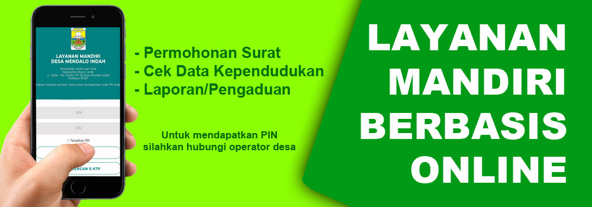
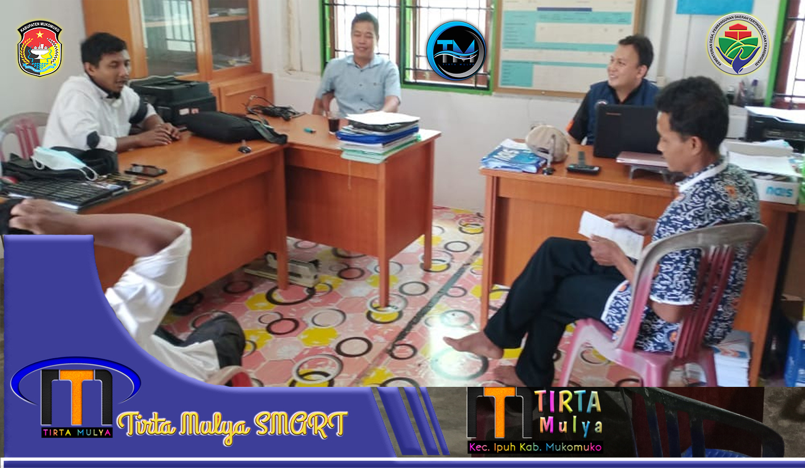
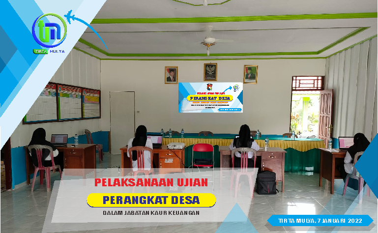
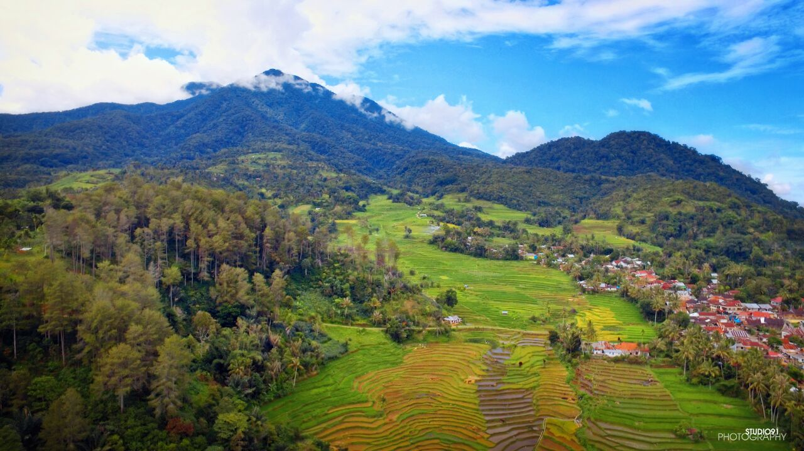

Statistik Pengunjung
| Hari ini | : | 78 |
| Kemarin | : | 80 |
| Total | : | 67.127 |
| Sistem Operasi | : | |
| IP Address | : | 125.164.23.225 |
| Browser | : | Tidak ditemukan |
Kelurahan Padasuka

Identitas
Kelurahan

Aparatur
Kelurahan


Ruang
Lapor
Batal
Identitas Kelurahan
| Nama Desa | : | Kelurahan Padasuka |
| Kode Desa | : | 1706052030 |
| Kecamatan | : | Ipuh |
| Kode Kecamatan | : | 170605 |
| Kabupaten | : | Mukomuko |
| Kode Kabupaten | : | 1706 |
| Provinsi | : | Bengkulu |
| Kode Provinsi | : | 17 |
| Kode Pos | : | 38764 |
Aparatur Kelurahan Padasuka

Kepala Desa
HENDRIYANTO
Belum Hadir

Sekretaris Desa
RIJKI IRSANDI
Hadir

Kasi Pemerintahan
LILIK SUSANTO
Belum Hadir

Kasi Kesejahteraan dan Pelayanan
SETIAWAN
Belum Hadir

Kaur Umumdan Perencanaan
DAVID NURHUDA
Belum Hadir

Kaur Keuangan
WAHYUNI
Belum Hadir

Kadus 1
FIRMANSYAH
Belum Hadir
Kontak & Pengaduan

Jika ada saran, pertanyaan, keluhan maupun kritikan dan pengaduan silahkan ajukan dengan menggunakan layanan dibawah...
081xxxxxxxxx
xxxxxxx@gmail.com
Layanan Pengaduan
Kantor Kelurahan Padasuka :
Alamat: Jl. Kyai H. Usman Dhomiri No.44, Padasuka, Padasuka, Cimahi Tengah, Kota Cimahi



Website Sid
Kelurahan Padasuka
Alamat: Jl. Kyai H. Usman Dhomiri No.44, Padasuka, Padasuka, Cimahi Tengah, Kota Cimahi
Identitas
Kelurahan

Aparatur
Kelurahan

Ruang
Lapor
POTRET KELURAHAN PADASUKA
POTRET KELURAHAN PADASUKA
POTRET KELURAHAN PADASUKA
Info
Aparatur Kelurahan Padasuka

Kepala Kelurahan Padasuka
XXXXXXXXXXXXX

XXXXXXXXXXXXX
Sekretaris Kelurahan Padasuka
XXXXXXXXXXXXX
Kasi Pemerintahan
XXXXXXXXXXXXX
Kasi Kesejahteraan dan Pelayanan
XXXXXXXXXXXXX
Kaur Umumdan Perencanaan
XXXXXXXXXXXXX
Kaur Keuangan
XXXXXXXXXXXXX
Kelurahan Padasuka 1

Pemerintah Kelurahan Padasuka
mengucapkan,
Selamat Memperingati Hari Besar Nasional
Memperigati Hari Buru

Hari Pendidikan Nasional

Selamat Hari Perawat Internasional
:strip_icc():format(jpeg)/kly-media-production/medias/3491208/original/083886000_1624453465-24_Juni__Hari_Bidan_Nasional2__1_.jpg)
Jadwal Imsak & Shalat
Wilayah Kota Cimahi
Sabtu, 7 Januari 2023
Imsak
Imsak
Imsak
Imsak
Imsak
Imsak
Terbaru
.jpg)

Artikel
Jangan Golput !!!!!!!
20 April 2022
75 Kali dibuka
0 Komentar
Pilkades Serentak Kabupaten Mukomuko Gelombang 1 (satu) tahun 2022 yang diadakan Rabu 17 Mei 2022.
Bagi warga Desa Tirta Mulya yang sudah memiliki hak suara diwajibkan menggunakan suaranya untuk memilih Calon Kepala Desa di Tempat Pemilihan Suara (TPS) yang sudah di tentukan oleh Panitia Pemilihan Kepala Desa.
Songsong Pilkades 2022 tertib, aman, damai, berkualitas, berintegritas
"Ingat...17 Mei 2022 , hari Pemungutan Suara Pilkades 2022...
Lanjutkan Membaca...
Artikel
Penetapan Dan Pengundian Nomor Urut Calon Kepala Desa Tirta Mulya
18 April 2022
282 Kali dibuka
0 Komentar
.jpg)
Pemilihan kepala kelurahan (pilkades) Desa Tirta Mulya sudah memasuki tahapan paling krusial. Senin (18/04/2022), Panitia pilkades Desa Tirta Mulya menggelar rapat pleno terbuka penetapan calon kepala kelurahan dan pengundian nomor urut calon di Balai Desa Tirta Mulya
Acara ini dihadiri oleh seluruh Panitia Pilkades, Kedua Calon Kepala Desa, Babinsa, Babinkabtibmas, Ketua dan Anggota BPD, serta tokoh masyarakat.
Pilkades Tirta Mulya tahun 2022 kali ini ...
Lanjutkan Membaca...
Artikel
76 Kepala Keluarga di Desa Tirta Mulya Mendapatkan Program Ketahanan Pangan & Hewani dari Dana Desa
14 April 2022
96 Kali dibuka
0 Komentar

Pada tahun 2022 ini, Pemerintah telah menerbitkan kebijakan terkait pemanfaatan Dana Desa, hal ini bahkan diatur dalam Peraturan Presiden no 104 Tahun 2021 Tentang RAPBN Tahun 2022 dan dijelaskan bahwa Dana Desa Tahun 2022 digunakan untuk :
Program Perlindungan Sosial berupa BLT Kelurahan Padasuka paling sedikit 40%.
Program Ketahanan Pangan dan Hewani paling sedikit 20%.
Dukungan pendanaan COVID -19 paling sedikit 8%.
Program sector prioritas lainnya.
Kegiatan...
Lanjutkan Membaca...
Artikel
PENGUMUMAN PENDAFTARAN BAKAL CALON KEPALA KELURAHAN PADASUKA
10 Maret 2022
139 Kali dibuka
0 Komentar
PENGUMUMAN
PENDAFTARAN BAKAL CALON KEPALA KELURAHAN
Bagi Bapak/Ibu Saudara yang hendak mencalonkan diri sebagai Bakal Calon Kepala Kelurahan Padasuka, berikut kami sampaikan Persyaratan yang harus dilengkapi. "Silahkan Bapak/Ibu/Sdr/i lengkapi persyaratan yang telah ditentukan".
Adapun persyaratan umum untuk menjadi Bakal Calon Kepala Kelurahan Padasuka adalah sebagai berikut :
Warga Negara Republik Indonesia;
bertaqwa kepada Tuhan Yang Maha Esa;
memegang...
Lanjutkan Membaca...
Artikel
Desa Tirta Mulya Mulai Menerapkan Absensi Perangkat Desa Berbasis Android (GPS)
01 Maret 2022
108 Kali dibuka
1 Komentar
Untuk meningkatkan pelayanan kepada masyarakat di Desa Tirta Mulya mulai menerapkan absensi bagi aparat kelurahan di wilayahnya dengan sistem absensi digital berbasis android Global Positioning System (GPS).
Sistem absensi ini akan diberlakukan bagi seluruh Perangkat Pemerintah Desa, mulai dari Sekretaris Desa (Sekdes) Kepala Urusan (KAUR), Kepala Seksi (Kasie) hingga Kepala Dusun (Kadus).
Absen digital ini dibuat untuk membantu Kepala Desa dalam...
Lanjutkan Membaca...
Artikel
MUSDESUS KPM BLT-DD TAHUN 2022
07 Februari 2022
62 Kali dibuka
0 Komentar
Tirta Mulya. Musyawarah Desa Khusus (Musdesus) BLT DD Desa Tirta Mulya diselenggarkan Senin (07/02/2022) di Aula Balai Desa Tirta Mulya. Musdesus dihadiri langsung oleh Staf Ahli Kasi Ekobang H. HERMAN Kecamatan Ipuh. Peserta musdesus terdiri dari Kepala Desa dan Perangkat, RT, BPD, Pendamping Lokal kelurahan, dan Tokoh Masyarakat. Musdesus kali ini menetapkan penerima BLT DD tahun anggaran 2022. Sebelum penetapan calon penerima BLT DD tahun 2022, RT...
Lanjutkan Membaca...
Artikel
Panduan Pendataan Bantuan Langsung Tunai– Dana Desa (BLT-Dana Desa)
06 Februari 2022
76 Kali dibuka
0 Komentar
Pemerintah masih akan melanjutkan Bantuan Langsung Tunai (BLT) Dana Desa pada 2022 mendatang. Menteri Desa, Pembangunan Daerah Tertinggal, dan Transmigrasi (Menterii Desa PDTT) Abdul Halim Iskandar mengatakan, pemerintah pusat telah memberikan patokan untuk penggunaan dana kelurahan 2022.Kriteria penerima BLT Dana Desa
Untuk kriteria penerima BLT Dana Desa, diatur sejak awal di Permendes 6/2020 tentang Perbaikan Prioritas Penggunaan Dana Desa 2020. Aturan...
Lanjutkan Membaca...
Artikel
BAHAN PAPARAN PMK 190 TAHUN 2021
06 Februari 2022
45 Kali dibuka
0 Komentar
Kementerian Keuangan menerbitkan Peraturan Menteri Keuangan tentang Pengelolaan Dana Desa terbaru dalam Permenkeu bernomor 190/PMK.07/2021. PMK setebal 902 halaman ini diterbitkan pada pertengahan Desember 2021 dengan ukuran file kurang lebih sebesa 451 MB. Lampiran Permenkeu 190/PMK.07/2021 tentang Pengelolaan Dana Desa berisi tentang Alokasi Dana Desa per Desa pada tahun 2022. Artinya pada tahun 2022 Desa masih mendapatkan Dana Desa yang bisa dipergunakan...
Lanjutkan Membaca...
Statistik Kelurahan Padasuka
Populasi
894
461
LAKI-LAKI
433
PEREMPUAN

Layanan Mandiri
Layanan Mandiri
Layanan Mandiri
Layanan Mandiri
Kelurahan Padasuka
Kecamatan Cimahi tenggah, Kota Cimahi
Selamat malam dan selamat beristirahat
Jam Kerja
| Hari | Mulai | Selesai |
|---|---|---|
| Senin | 08:00:00 | 16:00:00 |
| Selasa | 08:00:00 | 16:00:00 |
| Rabu | 08:00:00 | 16:00:00 |
| Kamis | 08:00:00 | 16:00:00 |
| Jumat | 08:00:00 | 16:00:00 |
| Sabtu | Libur | |
| Minggu | Libur | |
Komentar
Sinergi Program


{kind=link}
{kind=link}
{kind=link}
{kind=link}
{kind=link}
{kind=link}
Agenda
Statistik Pengunjung
| Hari ini | : | 78 |
| Kemarin | : | 80 |
| Total | : | 67.127 |
| Sistem Operasi | : | |
| IP Address | : | 125.164.23.225 |
| Browser | : | Tidak ditemukan |
Arsip Artikel
282 Kali dibuka
Penetapan Dan Pengundian Nomor Urut Calon Kepala Kelurahan Padasuka...
233 Kali dibuka
Semoga Jadi Pemimpin yang Amanah...

198 Kali dibuka
Pembinaan dan Pendampingan BUMDes...

179 Kali dibuka
Sejarah Kelurahan...

159 Kali dibuka
TES PENYARINGAN PERANGKAT Kelurahan TIRTA MULYA KEC. IPUH GUNAKAN...
15 Agustus 2022
kunjungan Kadis Komunfotik Prov. Bengkulu...
20 April 2022
Jangan Golput !!!!!!!...
18 April 2022
Penetapan Dan Pengundian Nomor Urut Calon Kepala Desa Tirta Mulya...
14 April 2022
76 Kepala Keluarga di Kelurahan Padasuka Mendapatkan Program Ketahanan...
10 Maret 2022
PENGUMUMAN PENDAFTARAN BAKAL CALON KEPALA Kelurahan ...
Tema Kelurahan Padasuka !
Untuk Aktivasi silahkan hubungi OPENDESA

Kelurahan Padasuka
Kec. Cimahi tenggah
Kota Cimahi